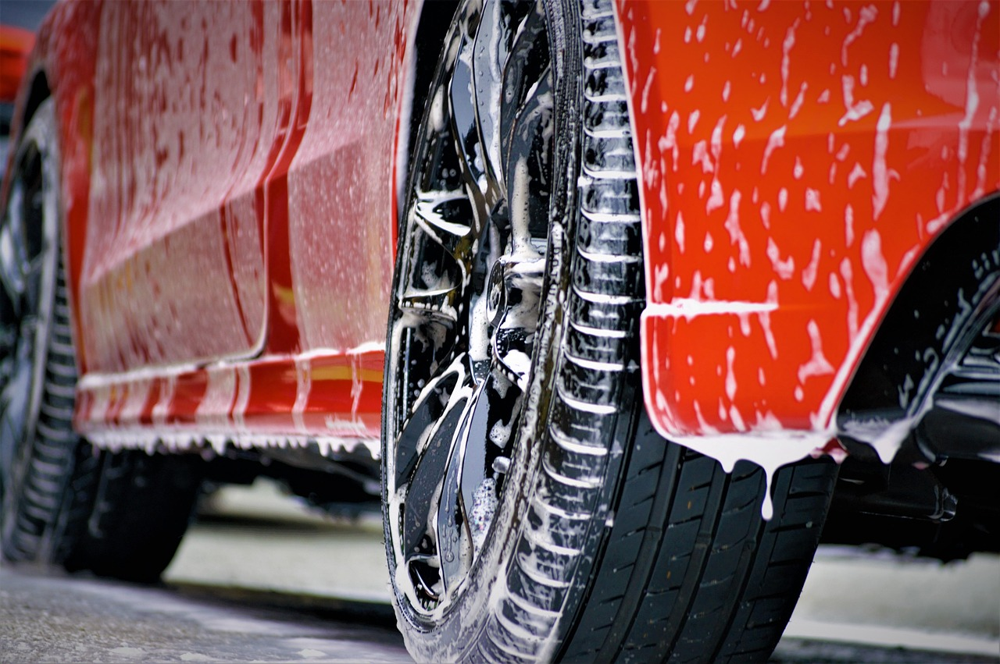

Spălătorie auto ecologică
Curățenie auto prietenoasă cu natura
Rapid și eficient, în București, cu produse ecologice.
0761 294 713
Despre noi
Suntem o spălătorie auto cu soluții ecologice, gândită pentru mașina ta și pentru mediu. Respectăm standarde moderne de curățenie și folosim produse sigure. La noi, autoturismul tău va arăta impecabil fără griji.

Ce primești la fiecare spălare
Patru lucruri pe care le urmărim la fiecare mașină.
-
Produse ecologice
Folosim produse ecologice, sigure pentru mașină și mediu.
-
Servicii rapide
Exemple — de completat cu ofertele dvs.
Eficiente, fără așteptare lungă.
-
Exterior strălucitor
Mașina iese curată și lucioasă pe din afară.
-
Interior curat
Interiorul este curățat la fel de atent.
Servicii
-
Reparații auto
-
Diagnoză
-
Întreținere
Prețurile le stabilim la telefon, în funcție de mașina ta.
Cum decurge o vizită
-
01
Ne suni sau ne scrii
Spune-ne ce vrei să facem mașinii tale.
-
02
Stabilim ora
Alegem împreună momentul care ți se potrivește.
-
03
Lucrăm cu produse ecologice
Spălăm exteriorul și interiorul mașinii.
-
04
Ieși cu mașina curată
Verifici împreună cu noi rezultatul.
Galerie
